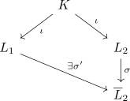
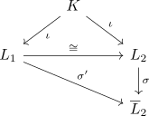

Isomorphie von Zerfällungskörpern
Satz
Sei $K$ ein Körper, $\mathfrak{F} \subseteq K[X]$ eine Familie von nichtkonstanten Polynomen und $L_1,L_2$ Zerfällungskörper von $\mathfrak{F}$ Dann sind $L_1,L_2$ (nicht-kanonisch) isomorph
\begin{align*}
L_1 \cong L_2
\end{align*}
Beweis
Sei $\overline{L}_2$ ein Algebraischer Abschluss von $L_2$ (vgl. existence of an algebraic closure). Dann gilt
\begin{displaymath}
\begin{tikzcd}
& K \arrow[]{d5}{\iota} & \\
& & L_2 \arrow[]{d}{\iota}\\
& & \overline{L}_2 \\
\end{tikzcd}
\end{displaymath}Nach dem Fortsetzungssatz für Körpererweiterungen existiert eine Fortsetzung

und nach K-Homomorphismus induziert Isomorphismus zwischen Zerfällungskörpern existiert somit eine isomorphismus
